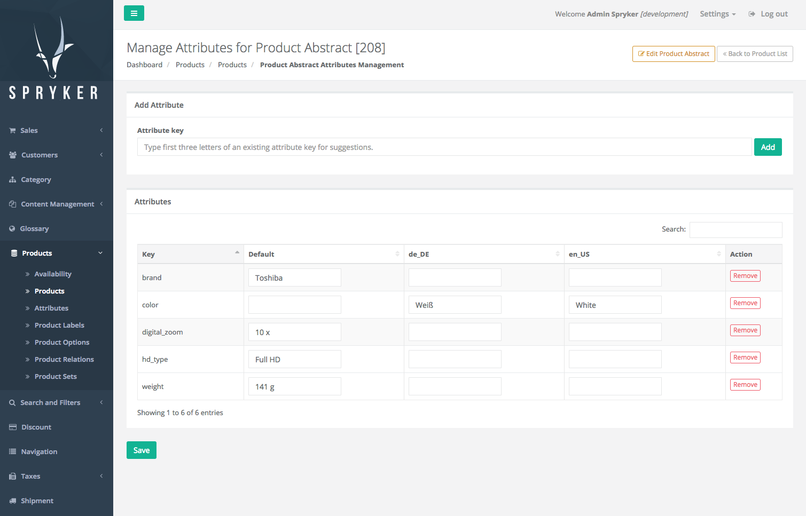

Release Notes - September - 1 2017
- Release Notes - September - 1 2017
- Features
- Improvements
- Template Validation to CMS Blocks
- Order Countries
- Remove Empty Catch Block
- Customer Group Optimisation
- Cache for Navigation
- Bugfixes
- Product Availability with Numeric SKUs
- Category Removal
- Removing Bundled Product
- Order of Arguments in addUser Call
- Sort Product Assignment Tables in Category
- MySQL Compatibility
- Last Login Date
- Viewing Details in Zed / Maintenance / Dependencies
- Touch Keys Cleanup
- Allow Type Array in the Transfer
- Availability of Bundle Items After De-assignment
- Triggering Not Active State Machine Process
- Add to Cart Product SKU Validation
Features
Attribute Management for A High Number of Attributes
To manage a high number of product attributes, we moved them to a separate module supported with a UI.
Now stores with more than 100k of product attributes, have a convenient and easy "process content management" interface.

Affected Modules
| Major | Minor | Patch |
|---|---|---|
| - ProductAttribute 1.0.0 - ProductAttributeGui 1.0.0 |
- ProductManagement 0.8.0 | n/a |
Documentation
For detailed migration guides see: ProductManagement Module Migration Guide from Version 0.7. to 0.8..
Migration Guides
To upgrade, follow the steps described below:
- Apply every minor and patch:
composer update "spryker/*"- Once that is done, upgrade to the new module major and its dependencies:
composer require spryker/product-attribute:"^1.0.0" spryker/product-attribute-gui:"^1.0.0" spryker/product-management:"^0.8.0"Remove Payment when Cart is Modified
With this release a new plugin, RemovePaymentCartPostSavePlugin, has been added. It removes payment transfers from quotes after the cart has been modified. This will for example, force customers return to the payment step when cart content is modified.
To use this new plugin:
- Run
composer require spryker/payment-cart-connector - Include
RemovePaymentCartPostSavePluginplugin toPyz\Zed\Cart\CartDependencyProvider::getPostSavePluginsplugin stack.
Affected Modules
| Major | Minor | Patch |
|---|---|---|
| - PaymentCartConnector 1.0.0 | n/a | n/a |
Migration Guides
To upgrade, follow the steps described below:
- Apply every minor and patch:
composer update "spryker/*"- Once that is done, upgrade to the new module major and its dependencies:
composer require spryker/payment-cart-connector:"^1.0.0"Improvements
Template Validation to CMS Blocks
Previously, it was possible to create a CMS block with a template that did not exist (template file was removed). We added a CMS block template check to prevent creating CMS blocks without a valid template. Users are notified with an appropriate message when this occurs.
Affected Modules
| Major | Minor | Patch |
|---|---|---|
| n/a | - CmsBlock 1.3.0 | - CmsBlockGui 1.1.3 |
Order Countries
Previously, the countries list was unordered. We have added sorting to the Spryker\Zed\Country\Business\CountryManager::getCountryCollection() method to have countries display in alphabetical order.
Affected Modules
| Major | Minor | Patch |
|---|---|---|
| n/a | n/a | - Country 3.1.1 |
Remove Empty Catch Block
The obsolete exception catch block in the DataImporter was removed. This change makes location import easier and transparent (in case of an issue, it will be thrown by its initiator).
Affected Modules
| Major | Minor | Patch |
|---|---|---|
| n/a | n/a | - DataImport 1.0.1 |
Customer Group Optimisation
Previously, when creating a customer group, if there were many customers the browser would hang. With this release, a special UI was introduced to the CustomerGroup module. It allows to seamlessly manage a high amount of customers and customer group relations.
Affected Modules
| Major | Minor | Patch |
|---|---|---|
| n/a | - CustomerGroup 2.2.0 | n/a |
Cache for Navigation
To improve navigation performance, we added a cache to the Navigation module.
Affected Modules
| Major | Minor | Patch |
|---|---|---|
| n/a | n/a | - Navigation 1.0.2 |
Bugfixes
Product Availability with Numeric SKUs
Previously, the availability of concrete products with numerical SKUs was incorrectly mapped. Due to this, the cart availability check did not behave as expected, resulting in product variants not being available. This issue has been fixed.
Affected Modules
| Major | Minor | Patch |
|---|---|---|
| n/a | n/a | - CartVariant 1.0.1 |
Category Removal
When a category is deleted, the deleted category's children are moved under the deleted category's parent. Previously, the category removal in the Zed admin interface could not handle a case when one of the children of the deleted category was also under the parent of deleted category. This issue is fixed now. The removal will move all children nodes of a deleted category under the parent. If one or more of the moved categories are already under the new parent, they will be ignored. The same rule will be applied for its children in case of collision.
Affected Modules
| Major | Minor | Patch |
|---|---|---|
| n/a | - Category 4.1.0 |
Removing Bundled Product
In certain cases, removing products assigned to bundle were not behaving as expected in the Zed admin interface. This issue is now fixed .
Affected Modules
| Major | Minor | Patch |
|---|---|---|
| n/a | n/a | - ProductManagement 0.7.8 |
Order of Arguments in addUser Call
Previously, the ACL installer crashed on run for several users and one group. This issue is now fixed, we switched the order of the function call's arguments.
Affected Modules
| Major | Minor | Patch |
|---|---|---|
| n/a | n/a | - Acl 3.0.2 |
Sort Product Assignment Tables in Category
Previously, you could not sort the table of assignable or already assigned products within a category-product assignment in the Zed admin interface. This was fixed by adding sorting options. The Assignable Product table now by default sorts by ascending ID sorting and allows ID, SKU re-sorting. The Already Assigned product table, now by default sorts by ascending "Order" and allows ID, SKU, "Order" re-sorting.
Affected Modules
| Major | Minor | Patch |
|---|---|---|
| n/a | n/a | - ProductCategory 4.3.1 |
MySQL Compatibility
Spryker core features now work with MySQL again, not just PostgreSQL. Specifically, hard-coded PostgreSQL syntax has been removed and data type casting has been fixed.
Affected Modules
Last Login Date
We fixed the Zed admin interface time formatting to display properly formatted date values when a customer is logged in. Before, the current date was displayed by default.
Affected Modules
| Major | Minor | Patch |
|---|---|---|
| n/a | n/a | - User 3.0.3 |
Viewing Details in Zed / Maintenance / Dependencies
This release fixes the exceptions caused by the previous patch when trying to render one of the simple, detailed or adjacency dependencies from the Zed admin interface.
Affected Modules
| Major | Minor | Patch |
|---|---|---|
| n/a | n/a | - Development 3.2.3 |
Touch Keys Cleanup
There was a collector exception when changing product URL back to a former URL. To fix this issue, we implemented touch key cleanup for collectors after objects are removed from Yves.
Affected Modules
| Major | Minor | Patch |
|---|---|---|
| n/a | - Collector 5.4.0 | n/a |
Allow Type Array in the Transfer
There was a bug when using typed arrays as type in the transfer schema files. In some cases, the type hint for the generated Transfer objects was breaking when the typed array was used. This issue was fixed.
Affected Modules
| Major | Minor | Patch |
|---|---|---|
| n/a | n/a | - Transfer 3.3.4 |
Availability of Bundle Items After De-assignment
There was an issue with availability/stock calculation. When all items were removed from a bundle, the availability/stock was not updated. This issue was fixed. Now, when all items are removed from bundle, stock and availability are set to 0.
Affected Modules
| Major | Minor | Patch |
|---|---|---|
| n/a | n/a | - ProductBundle 3.2.1 |
Triggering Not Active State Machine Process
Previously, when a state machine process was not added as an Active Process (it was an inactive process), it could still be triggered from the checkout when replacing an order. This issue is now fixed, and an exception is thrown if a process is inctive.
Affected Modules
| Major | Minor | Patch |
|---|---|---|
| n/a | n/a | - Oms 7.0.4 |
Add to Cart Product SKU Validation
Previously, adding a non-existing product to the cart would cause a 500 error. We added SKU validation on the Zed side and explicit error messages to cover this case. For more details see: Cart Module Guide: Cart Pre-Checks.
Affected Modules
| Major | Minor | Patch |
|---|---|---|
| n/a | - ProductCartConnector 4.2.0 | - Cart 4.0.2 |